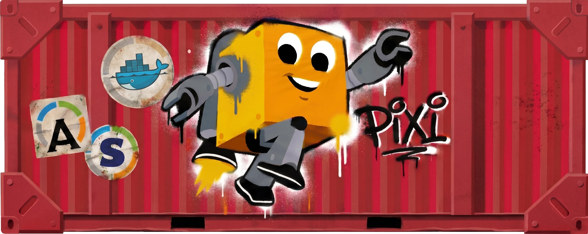

Apptainer
Build a SIF image with pixi containerize. Default output: pixitainer.sif.
Pixitainer turns a Pixi project, or a standalone conda tool, into an Apptainer, Singularity, or Docker image without giving up the speed and simplicity of your workspace.
Project mode reads pixi.toml/pyproject.toml; tool mode needs no manifest.

$ pixi containerize ✓ pixi.toml + pixi.lock → /opt/conf ✓ entrypoint: pixi run --locked --as-is ✓ image built at: pixitainer.sif $ pixi containerize tool fastp=0.23.4 ✓ slim tool image: fastp.sif
Install the extension that matches your target, then keep using a Pixi command. There is no separate project file or wrapper to learn.
# Apptainer pixi global install -c https://prefix.dev/raphaelribes -c https://prefix.dev/conda-forge pixitainer # Singularity pixi global install -c https://prefix.dev/raphaelribes -c https://prefix.dev/conda-forge pixitainer-singularity # Docker pixi global install -c https://prefix.dev/raphaelribes -c https://prefix.dev/conda-forge pixitainer-docker
Build a SIF image with pixi containerize. Default output: pixitainer.sif.
Target existing Singularity installations with pixi containerize-singularity.
Generate and build a Docker image with pixi containerize-docker, including BuildKit options.
Need a container for a tool you found five minutes ago? Pull it directly from a conda channel, from any directory, without creating a Pixi project first. Bundle a complete preprocessing toolkit in one image, ready for the next machine or cluster.
$ pixi containerize tool -c bioconda fastp fastqc bowtie2 seqkit -o preprocessing.sif ✓ preprocessing.sif $ pixi containerize tool fastp=0.23.4 ✓ slim tool image: fastp.sif
No pixi.toml or pixi.lock is required. Run tool from any directory.
Choose repeatable channels and pin versions inline with conda MatchSpec syntax.
Several tools share one image, while the build-time Pixi cache is removed automatically.
Active development moves quickly: teammates need shared defaults that keep builds coherent, while individual contributors still need safe, one-off overrides for local paths, targets, and experiments.
Commit the common project configuration in pixi.toml or pyproject.toml, then let backend-specific tables and CLI arguments adapt the same project without forking its setup.
Team defaults → backend override → personal or CI override
[tool.pixitainer] output = "my_image.sif" base-image = "ubuntu:24.04" manual = false env = ["default"] add-file = ["data/config.yaml:/opt/config.yaml"] post-command = ["echo ready"] [tool.pixitainer.docker] output = "my_image:latest" platform = "linux/amd64" push = false
Pixitainer is designed for real development and deployment workflows—not only the happy-path image build.
Install one or several Pixi environments with repeated --env, or skip environment installation with --no-install.
Project mode uses the host version by default, can pin with --pixi-version, or request --latest. Tool mode always uses the latest Pixi.
Add files, post commands, and labels. Keep the generated definition file or Dockerfile with --keep-def.
Use --platform, --push, --save, build args, secrets, SSH forwarding, tags, and cache import/export.
Pixitainer turns that project definition into the container format your next machine, cluster, or registry expects.
Explore Pixitainer ↗